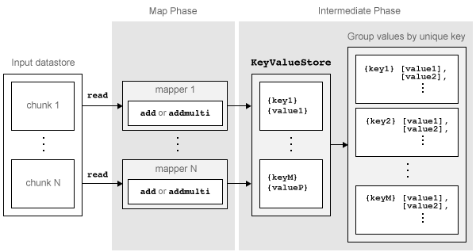

Write a Map Function
Role of Map Function in MapReduce
mapreduce requires both an input map function that receives blocks of
data and that outputs intermediate results, and an input reduce function that reads the
intermediate results and produces a final result. Thus, it is normal to break up a
calculation into two related pieces for the map and reduce functions to fulfill separately.
For example, to find the maximum value in a data set, the map function can find the maximum
value in each block of input data, and then the reduce function can find the single maximum
value among all of the intermediate maxima.
This figure shows the Map phase of the mapreduce algorithm.

The Map phase of the mapreduce algorithm
has the following steps:
mapreducereads a single block of data using thereadfunction on the input datastore, then calls the map function to work on the block.The map function then works on the individual block of data and adds one or more key-value pairs to the intermediate
KeyValueStoreobject using theaddoraddmultifunctions.mapreducerepeats this process for each of the blocks of data in the input datastore, so that the total number of calls to the map function is equal to the number of blocks of data. TheReadSizeproperty of the datastore determines the number of data blocks.
The Map phase of the mapreduce algorithm is complete when the map
function processes each of the blocks of data in the input datastore. The result of this
phase of the mapreduce algorithm is a KeyValueStore
object that contains all of the key-value pairs added by the map function. After the Map
phase, mapreduce prepares for the Reduce phase by grouping all the
values in the KeyValueStore object by unique key.
Requirements for Map Function
mapreduce automatically calls the map function for each block of data in
the input datastore. The map function must meet certain basic requirements to run properly
during these automatic calls. These requirements collectively ensure the proper movement of
data through the Map phase of the mapreduce algorithm.
The inputs to the map function are data, info,
and intermKVStore:
dataandinfoare the result of a call to thereadfunction on the input datastore, whichmapreduceexecutes automatically before each call to the map function.intermKVStoreis the name of the intermediateKeyValueStoreobject to which the map function needs to add key-value pairs. Theaddandaddmultifunctions use this object name to add key-value pairs. If the map function does not add any key-value pairs to theintermKVStoreobject, thenmapreducedoes not call the reduce function and the resulting datastore is empty.
In addition to these basic requirements for the map function, the key-value pairs added by the map function must also meet these conditions:
Keys must be numeric scalars, character vectors, or strings. Numeric keys cannot be
NaN, complex, logical, or sparse.All keys added by the map function must have the same class.
Values can be any MATLAB® object, including all valid MATLAB data types.
Note
The above key-value pair requirements may differ when using
other products with mapreduce. See the documentation
for the appropriate product to get product-specific key-value pair
requirements.
Sample Map Functions
Here are a few illustrative map functions used in
mapreduce examples.
Identity Map Function
A map function that simply returns what mapreduce passes to it is
called an identity mapper. An identity mapper is useful
to take advantage of the grouping of values by unique key before doing calculations in the
reduce function. The identityMapper mapper file is one of the mappers
used in the example Tall Skinny QR (TSQR) Matrix Factorization Using MapReduce.
function identityMapper(data, info, intermKVStore) % This mapper function simply copies the data and add them to the % intermKVStore as intermediate values. x = data.Value{:,:}; add(intermKVStore,'Identity', x); end
Simple Map Function
One of the simplest examples of a nonidentity mapper is
maxArrivalDelayMapper, which is the mapper for the example Find Maximum Value with MapReduce.
For each chunk of input data, this mapper calculates the maximum arrival delay and adds a
key-value pair to the intermediate KeyValueStore.
function maxArrivalDelayMapper (data, info, intermKVStore) partMax = max(data.ArrDelay); add(intermKVStore, 'PartialMaxArrivalDelay',partMax); end
Advanced Map Function
A more advanced example of a mapper is statsByGroupMapper, which is
the mapper for the example Compute Summary Statistics by Group Using MapReduce. This mapper uses a nested function to calculate
several statistical quantities (count, mean, variance, and so on) for each chunk of input
data, and then adds several key-value pairs to the intermediate
KeyValueStore object. Also, this mapper uses four input arguments,
whereas mapreduce only accepts a map function with three input
arguments. To get around this, pass in the extra parameter using an anonymous function
during the call to mapreduce, as outlined in the example.
function statsByGroupMapper(data, ~, intermKVStore, groupVarName) % Data is a n-by-3 table. Remove missing values first delays = data.ArrDelay; groups = data.(groupVarName); notNaN =~isnan(delays); groups = groups(notNaN); delays = delays(notNaN); % Find the unique group levels in this chunk [intermKeys,~,idx] = unique(groups, 'stable'); % Group delays by idx and apply @grpstatsfun function to each group intermVals = accumarray(idx,delays,size(intermKeys),@grpstatsfun); addmulti(intermKVStore,intermKeys,intermVals); function out = grpstatsfun(x) n = length(x); % count m = sum(x)/n; % mean v = sum((x-m).^2)/n; % variance s = sum((x-m).^3)/n; % skewness without normalization k = sum((x-m).^4)/n; % kurtosis without normalization out = {[n, m, v, s, k]}; end end
See Also
mapreduce | tabularTextDatastore | add | addmulti | KeyValueStore